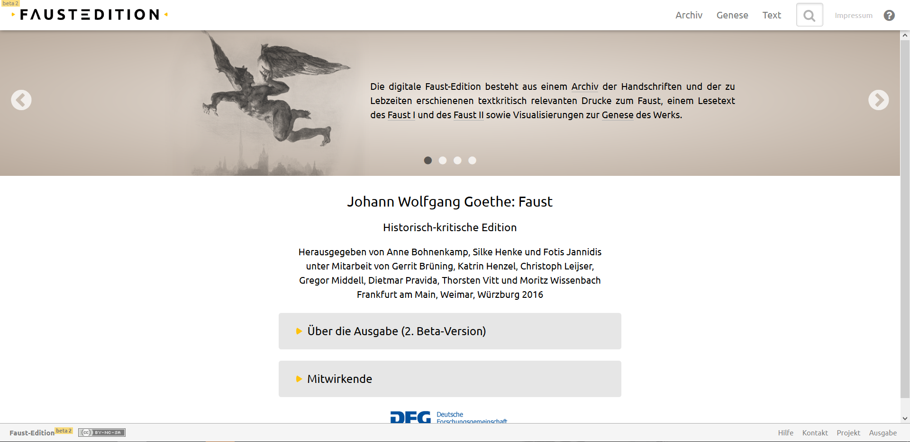
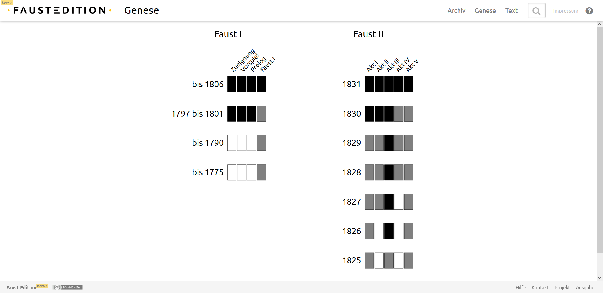
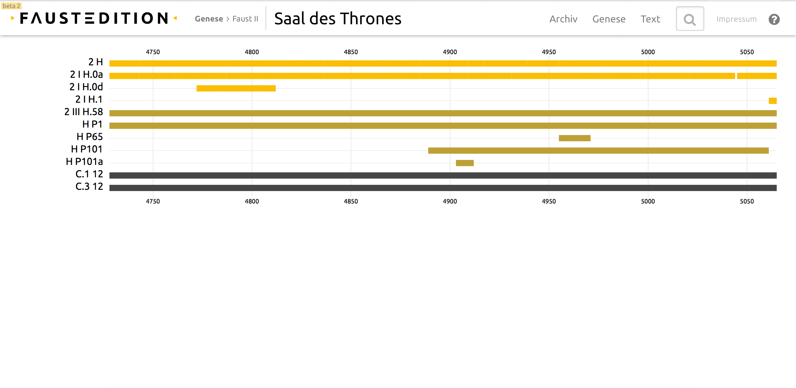
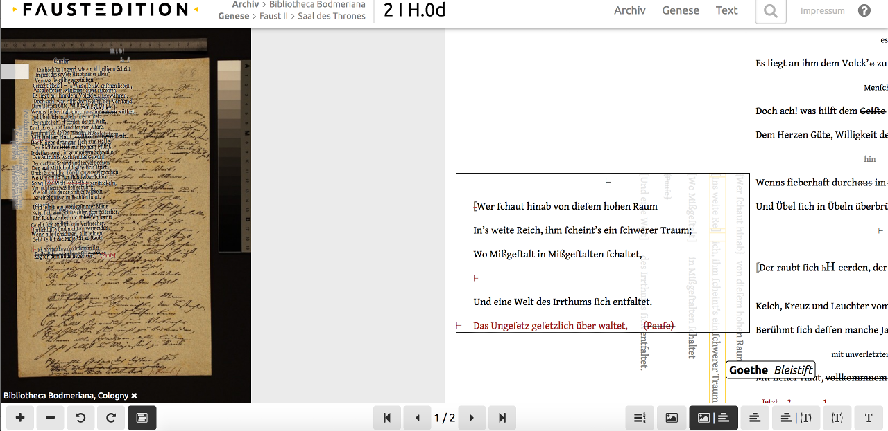
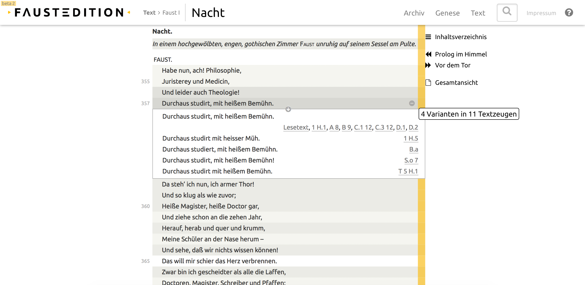
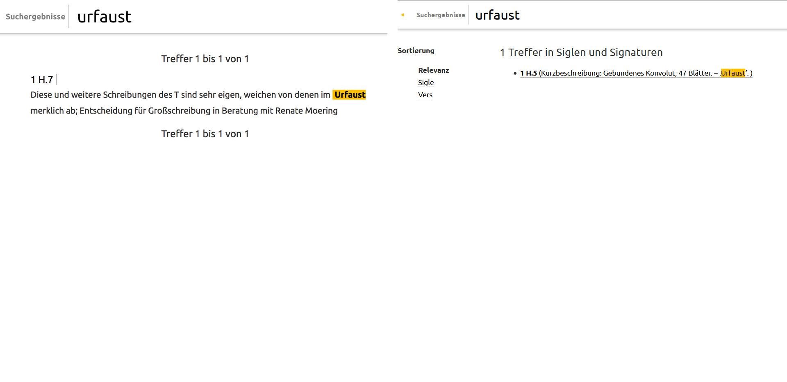

The ‘Beta Dilemma’ – A Review of the Faust Edition
Table of Contents
Abstract
The Faust Edition is a historical-critical edition of Johann Wolfgang von Goethe’s Faust (1808/1832). Considered to be one of the most important works of German literature, it took until 2009 before a DFG-funded project started to produce a modern scholarly edition with the purpose of tracing the genesis of the two-part play. The edition is supported by the Freies Deutsches Hochstift (Frankfurter Goethe-Haus), the Klassik Stiftung Weimar and the University of Würzburg; the main editors are Prof. Dr. Anne Bohnenkamp, Dr. Silke Henke und Prof. Dr. Fotis Jannidis. In 2016, a first beta version of the edition went online. The version under review here is the beta version 2, released on 17 October 2016, although beta version 3 has by now been published as well (on 28 August 2017). This conundrum befits the main theme of the review which focuses on the challenges posed by the perpetual "beta status" of digital editions and the consequences this yields in the context of academia.
Introduction
On a late summer day in 1831, Johann Wolfgang von Goethe set his quill aside, filled with tremendous satisfaction. He had just finished the second part of his Faust, a work that he had been occupied with for most of his life, writing, revising and revisiting it for over 60 years. ‘My remaining days,’ he said, ‘I may now consider a free gift; and it is now, in fact, of little consequence what I now do, or if I do anything.’1
He died, soon thereafter. Goethe did not live to witness the complete release of his finished magnum opus; instead, the tragic play that had seen an initial fragmentary publication in 1790 and a subsequent publication of Part One in 1808, was only made fully available posthumously. In Part Two, Goethe had transformed his continuation of the classic tale of the scholar Faust and his bargain with the devil, already familiar to English-speaking audiences by way of Christopher Marlowe’s The Tragical History of Doctor Faustus (c. 1592), into a mythological, philosophical and psychological treatise barely fit to be performed on stage anymore, so all-encompassing had it grown in its themes. Thus, the writer, who had been much-revered throughout all of his life and all of Europe, if not the world, cemented his legacy with what is still widely regarded as ‘the flagship of German literature’2.
Considering the enduring popularity of his Faust and its purported singular importance, it comes as a surprise to learn that it was never the subject of a modern-day historical-critical edition. In 1994, the famed German philologist and Goethe scholar Albrecht Schöne stated in the preface of his own (albeit in itself un-historical-critical) Faust edition that this neglect constituted a ‘national shame’3.
And so it was in 2009 that a DFG-funded project finally sought to rectify the situation by creating a historical-critical edition of the complete Faust to trace the origins of the work. From the beginning, this edition was envisaged as a hybrid edition with a print version containing facsimiles and a digital edition containing an ‘innovative genetic apparatus’4. This initial project ran until 2015 and forms the basis of the continued editorial efforts that have manifested themselves in the web-based edition under review here. It is jointly supported by the Freies Deutsches Hochstift (Frankfurter Goethe-Haus), the Klassik Stiftung Weimar and the University of Würzburg. The editors are Prof. Dr. Anne Bohnenkamp, Dr. Silke Henke und Prof. Dr. Fotis Jannidis; other collaborators include Dr. Gerrit Brüning, Dr. Katrin Henzel, Christoph Leijser, Gregor Middell, Dr. Dietmar Pravida, Thorsten Vitt and Moritz Wissenbach.5

Content and Structure
First of all, let me expand on the materials provided on the website in its current state. They are divided, structurally, into (1) a complete archive of the Faust manuscripts and prints produced during Goethe’s lifetime, (2) data visualizations pertaining to the genesis of the work, and (3) a reading text.
The archive contains digital facsimiles of the manuscripts and prints – in some, not all, cases – and bibliographic metadata.8 Furthermore, in conjunction with the facsimiles the archive offers a view of the section structure (‘Lagenstruktur’), documentary and textual transcriptions9 as well as a reference to the apparatus criticus of the respective passage, integrated into the text portion of the site that it links to.


Last but not least, the third main component of the edition is the reading text. This text has not been emendated and remains true to the witness chosen for each part. In the case of Part One, this is the version that was printed in the first complete edition (of that part) as published by Cotta; in the case of Part Two, the text is taken from a manuscript called the ‘große Reinschrift’ (great fair copy). The reading text is accompanied by the aforementioned critical apparatus – alternate line readings from other witnesses can be triggered by a click on a line. The lines where variants exist are indicated by a different background colour as well as tooltip information.
The content of the edition is complemented by the documentation of its content, such as the editorial principles11 and notes on the different released versions.12
Aesthetics and Navigation
Inevitably, I have already made mention of several visual and navigational aspects. As a first-time reviewer of a digital edition, this section of a review strikes me as the most contestable part. When reviewing a book, one does not have to note the typography or layout or rate its usability, unless those are exceptionally poor or laudable; a book is inherently usable. The conventions of it are ingrained in our literate society and while cover art might be judged on its aesthetic merits, it has little bearing on the inside. With a digital edition, there is no inside or outside. Its division into pages owes its logic to the printed world but that is where the most notable similarities end.
There are many theories as to what constitutes good web design; too many to list them here. One of the simpler truths is that good web design should be intuitively understood (cf. Krug 2000). Therefore, instead of overcomplicating this part of the review, I will chronicle my immediate reaction, recognizing that the assessment of the usability of a digital edition is always – primarily – a matter of personal preference.
Having said that, the edition has, in my opinion, a modern, minimalist and, if such a statement might be allowed, pleasing look. Clad for the most part in a white background, black script and yellow accent colour, it assembles a clean and uniform presentation. The slightly rounded off edges of the font (Ubuntu or at least similar) are matched by the slightly rounded off edges of some text boxes, shaded in a light grey, a very sparsely and wisely used design element, only meant to accentuate a few references of import.13 The same goes for the extendable search bar.
The front page of the edition employs the current trend of full width image sliders, making good use of it by combining pictures relevant to the edition – Eugene Delacroix’s Mephistopheles Flying, from Faust (1828),14 details of manuscript pages – with information regarding the main components of the edition, each afforded their own slide.
The primary menu is located in the upper right-hand corner on a fixed header, together with the search bar, legal information and a question mark that is supposed to offer a help function in an upcoming version. The menu consists of the main components (in German, same as the whole website): archive (‘Archiv’), genesis (‘Genese’), text (‘Text’). The title of the edition, highly typographically stylized, is placed in the upper left-hand corner on the same header, preceded by the superscript ‘beta 2’.
In the lower right-hand corner, on a smaller – also fixed – footer, a secondary navigation bar can be found.15 It leads to the not yet available help page (‘Hilfe’), contact information (‘Kontakt’), project information such as the participating parties (‘Projekt’) and the documentation of the edition as well as the specific version of the edition (‘Ausgabe’). In the lower left-hand corner on the same footer, the title of the edition is stated once more, albeit not in a stylized form, followed by a superscript ‘beta 2’ and its Creative Commons license: Attribution-NonCommercial-ShareAlike 4.0 International (CC BY-NC-SA 4.0).
Something that might have already become obvious by my description is that a direct link to the editorial principles is missing. Finding them proved quite cumbersome. One has to navigate to the documentation of the edition, read through all of it and find a mention of the transcriptions, either documentary or textual, which will then link to the editorial principles.16 The fact that they are, in terms of web design, practically hidden away is a shame since they are very thorough, which I highly commend. An argument might be made that any respectable user of the edition would read all the documentation in any case, thus having no issue finding this information. That is certainly true. The lack of a table of contents, however, as you would traditionally encounter in a book, means that there is still a lack of overview and, if one wants to revisit the principles while perusing the reading text, an unnecessarily circumvent way of navigation.
Furthermore, this problem is acerbated by the fixed footer disappearing when one views either the facsimiles and transcriptions or the reading text. A curious phenomenon that will hopefully be rectified in one of the scheduled updates of the edition.
When it comes to the archive and the presentation of the facsimiles and transcriptions, the wealth of material must be positively noted. Clearly, a lot of effort went into the metadata and the visualization of the section structures. The image viewer allows for a synoptic presentation of the facsimile and the documentary transcription, if it exists. It is also possible to view the documentary transcription alone or in a synoptic view with the textual transcription. It is also possible to view the textual transcription alone. It is, however, not possible to synoptically view the facsimile and the textual transcription.
The controls for the image viewer are located in the lower left-hand corner, the controls for toggling the different states in which to view the manuscript are located in the lower right-hand corner. Perhaps this accounts for the disappearance of the footer but even so, I will reiterate that that should not be the case.
One more noteworthy part of the image viewer is the fact that the documentary transcription, should it exist, can be toggled to appear as an overlay on the facsimile with the lines aligned. The documentary transcription is, whether viewed like that or separately, annotated. Hovering over the lines will provide information about the scribe and the writing material used.


In fact, even the different line colourings indicating the number of variants are not explained anywhere in the documentation and their function is merely an assumption on my part, based on my observation of the correlation.
Documentation and Data
This brings us to the documentation as a focal point of discussion. To be concise: It is detailed but scattered. Well-written and well-presented but at the same time lacking in crucial information and bibliography, pertaining to the edition itself.
Now to elaborate on this: The – at times hindered – navigation to the documentation notwithstanding, the very existence of a detailed project documentation is cause for praise, seeing as this cannot be taken for granted when it comes to digital editions; not yet, anyway. The menu item ‘Ausgabe’ of the footer navigation bar leads to a page with sections on the beta version (‘Beta-Version’), the manuscripts (‘Handschriften’), the prints (‘Drucke’), the reading text (‘Lesetext’), the genesis and different visualizations thereof (‘Genese’), the codes made up of numbers and letters, used to identify the witnesses (‘Siglen’), the full text search (‘Volltextsuche’), the procedures of technical analysis used on the source material (‘Technische Untersuchungsverfahren’), the bibliography (‘Bibliographie’) and the citation recommendation (‘Zitierempfehlung’). Many of the sections link to full single pages dedicated to the given topic. Since these links are incorporated into the text as any other (to other non-documentary parts of the edition, for example), this approach means that most information has to be ‘discovered’, as has been noted in the example of the editorial principles. An overview of all the documentation available would go a long way towards mitigating any confusion that might arise from the lack of information elsewhere (such as the visualizations or, really, any part of the edition in situ).
Given the fact that the edition adheres quite closely to the state of the art in many respects – the synoptic presentations of facsimile and transcriptions, the variety of transcriptions, the visualization of genetic variance, the abundance of material and documentation, the up-to-date appearance, the citation recommendation –, it comes as a bit of a surprise to find no information on the technical realization of the edition itself. Nor, indeed, on the project history, aside from a brief mention.20
There is one hint at the use of TEI-XML on the page detailing the current beta version and it reads as though it can be assumed the user knows all of this already.21 In my case that is true, since I am familiar enough with digital editions to have that expectation, but the same can very probably not be said for casual users. Even if German scholars might not be particularly interested in this aspect of the edition, and even though the TEI guidelines have become an almost ubiquitous standard in the field, it stands to reason that, for the sake of transparency, there should be a slightly longer remark on this, beta version or not.
As for the TEI-XML files, they are not yet provided but there is a link to the code of the whole web application on Github22 where one can find a few sample files.23 Moreover, the editors state that they are going to make the TEI-XML files of the transcriptions available for download on the main website in the future, as well as all other content of the edition.
The impression that the editors are, in principle, extraordinarily aware of the challenges, potential pitfalls and best practices of a digital edition is confirmed by a perusal of the literature written about the undertaking, although sadly none of it is referenced in the bibliography included in the documentation. The bibliography focuses solely on the subject of the edition, Goethe’s Faust and its transmission, which is, of course, especially relevant for the manuscript descriptions included in the archive. However, a quick search outside of the edition yields several results about the edition and these articles are very enlightening when it comes to the initial objectives of the project (cf. Anne Bohnenkamp et al. 2012) or the rich, parallel encoding of the different transcriptions (cf. Brüning, Henzel and Pravida 2013), the principles of which were developed in cooperation with a workgroup as part of a TEI SIG, focused on genetic editions (cf. Workgroup on Genetic Editions 2010).
The easiest solution, instead of writing new documentation, would be, for the time being, to link to these articles where possible. It is unclear whether there will be a bibliography about the development of the edition in one of the upcoming versions but there should be, in my opinion.
As for the topic of the long-term availability of the data and how the
edition can be quoted: The citation recommendation is a welcome addition to any
digital edition. Besides the citation recommendation already offered at the end of
the documentation, the editors claim that a future beta version will incorporate an
automatically generated citation recommendation on every page. That is certainly
sensible. Looking at the given citation recommendation, however, one cannot help but
notice the URLs currently in use. In the example provided beneath the citation
schema, the included URL reads as follows:
http://beta.faustedition.net/documentViewer?faustUri=faust://xml/document/faust/0/gsa_390028.xml&page=1&view=facsimile_document
This monstrosity, if I may, does not inspire confidence that it will still lead to
much of anywhere in a few months’ time, let alone a few years’. At the very least,
the ‘beta’ portion of the URL will presumably disappear at some point and render the
reference moot, should it not be redirected. The editors are aware that there should
be a stable point of reference, stating that persistent identifiers will be added to
the transcriptions in the version 1.0.24
But this raises the question: Can the edition be quoted in an academic context already or can it not? If not, why provide a citation recommendation? And if it can, is this supposed to be done at one’s own peril? Does the responsibility of rating the quotability of something rest solely on the shoulders of the user? And can a digital edition be quoted without ensuring that someone reading the quotation will still be able to trace the very exact appearance and functionality of what it was that the original user was looking at and, quite likely, manipulating via clicks and toggles?
All these questions lead to a discussion that goes beyond the scope of this review. But although many of these issues are still being actively debated – is a unique identifier enough, or does a reference have to include instructions on topics such as navigating the referenced page to the point the original user was at? –, there is something to be said here about the general beta status of digital editions, a status that this edition inhabits quite explicitly.
The ‘Beta Dilemma’
Labelling the Faust edition a beta edition, both by specifically including the word ‘beta’ in the URL and as a superscript tag close to the title of the edition, wherever it appears, is an exemplary choice by the editors that should be applauded. Why? Because it draws attention to the fact that a digital edition is not a static, finished product. Neither is a printed edition, one might argue, since it can be reissued and republished, e.g. to correct mistakes. However, the fluidity of all things online creates a decidedly different environment in which changes, large and small, often happen without much ado or, indeed, mention, attribution or preservation of the previous version.
Deciding to be transparent about this dynamical process is a step in the right direction – but it also raises questions of a different kind. If no digital edition is ever finished, when will it shed its beta status? If it never sheds its beta status, how can it ever be reviewed or referenced? For the declaration as a beta version implies testing phase, which in turn implies unreliability, which in turn serves as a convenient response to any and all criticism. Who judges the ‘ripeness’, as a colleague called it, of a digital edition? Only the editors themselves? But why offer up something for consumption that is still as green as the bananas sold prematurely in supermarkets? Or, to put it more elegantly: Why release something at all, if it is not polished to a satisfying degree? Making something public on the internet is a publication. Is the fast-paced publication of something that holds less quality that it is already anticipated to hold after an update not grist to the mill of all the detractors of everything digital?
I will call this conundrum the ‘beta dilemma’. The ‘beta dilemma’ is the conflict that occurs when the unstoppable progression of alteration meets the immovable aspiration for authority. Authority is certainty. Alteration is the opposite thereof. When both clash, ‘beta’ becomes the perpetual state of un-being. While this general situation is known in software development as ‘perpetual beta’ or the ‘banana principle’, hence my evocation of the image, there is something markedly different about it in the academic context: Relying on user feedback to constantly maintain and update a service is one thing – there is an advantage to that. It is resource-friendly. But academia, as susceptible as it might be to the everlasting need for improvement, is based around the concept of reliability when it comes to publications. Otherwise, a thesis or observation or whatever else one might publish would not circulate. The same goes, perhaps even more so, for primary source material; and the issue cannot be reduced to a matter of trust in the authority of a person or institution. It is very much an issue of traceability and replicability. In the digital academic context, that need cannot be met by conventional means of page or line number – too much of the perception is tampered with by the environment in which the ‘pages’ and ‘lines’ are hosted, too much is changing, changing, always changing.
Keeping a changelog is therefore a must for a digital scholarly edition. The Faust edition does that, almost. After the release of beta version 2, the changes were listed on the documentation page dedicated to the beta versions, albeit only the ‘most notable’ changes.25 This demonstrates a sufficient awareness of the problem. However, given that there may be a number of further beta releases before the first version 1.0, and thereafter further ‘finished’ but altered versions, simply listing the changes is not enough. I want to emphasize that I am arguing against the current state of the art here, not the edition itself; only, as it were, by extension, since it embodies the state of the art.

To put it this way: Was the Urfaust not a ‘beta’ Faust? What would have happened, had it simply been replaced with Faust: A Fragment which in turn had been replaced by Faust: A Tragedy? We would not be able to trace the genesis of this monumental work of literature. Similarly, editions must be careful to not just note their own fluctuation of content and appearance but also to preserve it in a stable way of versioning. Otherwise, future generations will be none the wiser. In fact, knowledge may get lost in the void of time and the constant turning of the technological tide. Scholarly editions especially that aim to bridge the gap between historical contexts and present assumptions by way of documentary witnesses have the duty to not fall prey to the ephemeral fading of thought that they proclaim to overcome.
This argument does not mean to equate the importance of preserving the transmission of a literary work like the Faust with the importance of preserving the different versions of its edition. The value of the latter is tied to the way in which the web of academia is spun. The value of the former is the insight into the mind of one of the greatest writers of mankind and the origin of his arguably greatest work. Documenting that has always been difficult. Documenting different versions of an edition, on the other hand, required little effort in the printed world since they were documented by their separate existence. This is no longer the case in a digital world and that is the issue.
There are other problems related to this ‘beta dilemma’ that need to be addressed but the long-term preservation of the edition – in its different iterations – is the most pressing, in my opinion. Only when this is solved, in conjunction with reliable referencing, will digital scholarly editions be able to apply for the academic credit they strive to deserve for their enhanced possibilities of interaction, presentation and overall added dynamic value of the medium.
Conclusion
In conclusion, the Faust edition does nothing wrong and many things right, even in its self-ascribed beta status. The version 1.0 is to follow, sooner or later. A final judgment must, naturally, be reserved until such a time comes; and even then, it will not be the final judgment per se, as I have discussed.
On the positive side, the overall design, aesthetics, materials, realized presentations and functions, detailed documentation and self-awareness have to be noted.
On the slightly-less-positive but not outright negative side, some navigational issues, lack of documentary overview and questionable points of reference emerged.
These minor grievances can be fairly easily rectified with some of the suggestions I outlined alongside my criticism. The more fundamental problem of the beta status of digital editions, indeed, the fact that no digital edition is ever ‘finished’, cannot be laid on the doorstep of this edition in particular, although I used this opportunity to shine some light on it; it inherits the faults of the state of the art even when it adopts the best practice. Everything about this project, however, suggests that it will evolve to the highest of standards, so the goal should not be to adopt the state of the art but to improve on it. The thoughtful conduct of the editors assuages most objections because it promises a carefully deliberated approach to all aspects of the edition. This does not belie the fact that some parts, so far, have been better executed than others and that, in its current form, the edition does not yet fully uncover the genesis of the work – perhaps I am simple-minded but would it not be nice to have a synoptic view of the Urfaust and Part One with the most semantically significant deviations highlighted?
But such is the state that we are in. Great care and time goes into digitizing the source material, modelling the mark-up and designing the presentation. Because these are always collaborative efforts, they are all the more impressive for it. And then a casual user (or reviewer) complains about the lack of legends next to the visualizations. It may seem petty but it is anything but – it is only meant to illustrate that in the grand scheme of things, it is easy to lose sight of the immediate experience. And that, regrettable as it may be, accounts for more when it comes to digital editions than when it comes to printed editions. I call it ‘regrettable’ not because I am unaware of the flipside of it (which is the fact that it is also a more exciting experience) but because it indicates that the conventions for digital editions still have to mature into a state where a review such as this can make quick mention of appearance and functionality and then move on to the part that really matters: content, or in other words, the philological and scholarly merits of the edition that would traditionally be the focus of an academic review.
Thankfully, for me, much has been written about Goethe and his Faust already, so I do not feel this neglect on my part all too keenly; and given that this edition is still in its infancy and has the future ahead of it, I imagine that much more will be written about that side of things in the years to come.
Bibliography
- Bohnenkamp, Anne, Gerrit Brüning, Silke Henke, Katrin Henzel, Fotis Jannidis, Gregor Middell, Dietmar Pravida and Moritz Wissenbach. 2012. ‘Perspektiven auf Goethes ›Faust‹: Werkstattbericht der historisch-kritischen Hybridedition.’ Jahrbuch des Freien Deutschen Hochstifts 2011: 23–67. URN: urn:nbn:de:bvb:20-opus-76823.
- Brüning, Gerrit, Katrin Henzel and Dietmar Pravida. 2013. ‘Multiple Encoding in Genetic Editions: The Case of ‘Faust’.’ Journal of the Text Encoding Initiative 4 (March): 1-14. DOI: 10.4000/jtei.697. http://jtei.revues.org/697.
- Eckermann, Johann Peter. 1850. Conversations of Goethe with Eckermann and Soret (vol. II), transl. by John Oxenford. London: Smith, Elder & Co. [Original publication of Gespräche mit Goethe in den letzten Jahren seines Lebens by Eckermann in 1836].
- Henzel Katrin. 2015. ‘Zur Praxis der Handschriftenbeschreibung. Am Beispiel des Modells der historisch-kritischen Edition von Goethes Faust.’ In Vom Nutzen der Editionen: Zur Bedeutung moderner Editorik für die Erforschung von Literatur- und Kulturgeschichte, edited by Thomas Bein, 75–96. Berlin: De Gruyter.
- Krug, Steve. 2000. Don’t Make Me Think! A Common Sense Approach to Web Usability. Indianapolis: New Riders.
- Michaelis, Rolf. 1994. ‘Goethe: Eine Zumutung.’ Die Zeit (4 November), https://web.archive.org/web/20161222133613/http://www.zeit.de/1994/45/goethe-eine-zumutung/komplettansicht.
- Schöne, Albrecht. 1994. Faust: Kommentare (Bibliothek deutscher Klassiker; vol. 114 / Sämtliche Werke; vol. 7, part 2). Frankfurt am Main: Deutscher Klassiker Verlag.
- Vaget, Hans Rudolf. 2001. ‘Wer Vieles bringt, wird manchem etwas bringen: Zur Situation der Faust-Philologie im Jubiläumsjahr 1999.’ In Goethe-Philologie im Jubiläumsjahr: Bilanz und Perspektiven, edited by Jochen Golz, 29-42. Tübingen: Niemeyer.
- Workgroup on Genetic Editions. 2010. ‘An Encoding Model for Genetic Editions.’ https://web.archive.org/web/20170503220315/http://www.tei-c.org/Activities/Council/Working/tcw19.html.
Notes
- Eckermann as transl. by Oxenford 1850, 401. ↑
- ‘Dieses Werk gilt immer noch, draußen in der Welt nicht weniger als im deutschen Sprachbereich, als das Flaggschiff der deutschen Literatur.’ (Vaget 2001, 29). ↑
- ‘So ist eine historisch-kritische Ausgabe des Faust, die einen zuverlässigen authentischen Text böte [...] und damit allererst eine Grundlage herstellte für korrekte Leseausgaben, bis heute nicht zustande gekommen – was angesichts des weltliterarischen Ranges dieser Dichtung doch wohl eine nationale Schande darstellt.’ (Schöne 1994, 80). ↑
- As was even reported in the newspaper Frankfurter Neue Presse on 29 August 2014, under a headline about a historical-critical edition of Goethes Faust being created, https://web.archive.org/web/20170501152054/http://www.fnp.de/lokales/frankfurt/Historisch-kritische-Edition-von-Goethes-Faust-entsteht;art675,1006821. ↑
- Cf. https://web.archive.org/web/20170501151835/http://beta.faustedition.net/project. ↑
- Cf. https://web.archive.org/web/20170430143658/http://beta.faustedition.net/beta-release1. ↑
- To avoid confusion, the changes made in beta version 3 will not be taken into account retroactively. The descriptions of the edition refer to beta version 2 on every level, be it visually or content-wise. For completion’s sake, here is a quick rundown of the changes introduced in beta version 3, best to be perused after reading the review first. The archive now contains documents related to the genesis of the work. The tabular presentation of the archive was revised. The visualizations of the genesis now contain arrow buttons on the detail pages and the option to choose the verse interval the graph is supposed to show. The other changes are minor and optical in nature. The front page of the edition was changed to exclude the footer and expand the image slider. While it does look nice, it is arguably a Verschlimmbesserung (improvement for the worse) in terms of navigational clarity; for a list of the changes, cf. https://web.archive.org/web/20170918134914/http://beta.faustedition.net/beta-release. ↑
- Starting with beta version 3, it also contains documents pertaining to the genesis of the work. ↑
- Textual transcription has a specific meaning in this context that relates to the constitution of the text – the documentary transcriptions focus on the physical and visual phenomena, the textual transcriptions on the genesis of the work as an intellectual entity; this corresponds to the widespread dichotomy in German editing of "Dokumentation" (record) and "Deutung" (editorial interpretation), cf. Brüning, Henzel and Pravida 2013, esp. p. 5 f. ↑
- Cf. https://web.archive.org/web/20170501184823/http://beta.faustedition.net/intro. ↑
- Cf. https://web.archive.org/web/20160531033152/http://beta.faustedition.net:80/transcription_guidelines. ↑
- Cf. https://web.archive.org/web/20170430143658/http://beta.faustedition.net/beta-release1. ↑
- Such as the participating editors and currently released version on the front page or the content sections in the introduction: https://web.archive.org/web/20170422202547/http://beta.faustedition.net/, https://web.archive.org/web/20170501184823/http://beta.faustedition.net/intro. ↑
- For more information about the artwork, cf. the entry by the Art Institute Chicago: https://web.archive.org/web/20170501204108/http://www.artic.edu/aic/collections/artwork/84485. ↑
- This is not the case for the front page anymore in beta version 3. I consider this a change for the worse. ↑
- Cf. https://web.archive.org/web/20170501210025/http://beta.faustedition.net/transcription_guidelines. ↑
- For example, when viewing manuscript 1 H.3. ↑
- For example, when viewing manuscript 2 I H.0d. ↑
- Cf. https://web.archive.org/web/20170430143658/http://beta.faustedition.net/beta-release1. ↑
- Cf. https://web.archive.org/web/20170501151835/http://beta.faustedition.net/project. ↑
- Since neither the abbreviation TEI nor XML are explained, cf. https://web.archive.org/web/20170430143658/http://beta.faustedition.net/beta-release1. ↑
- Cf. https://web.archive.org/web/20170503125755/https://github.com/faustedition. ↑
- Here, for example: https://web.archive.org/web/20170503130004/https://github.com/faustedition/faust-example-data/tree/master/xml/transcript/fdh_frankfurt/Hs-6626. ↑
- Cf. https://web.archive.org/web/20170503134833/http://beta.faustedition.net/beta-release. ↑
- Cf. https://web.archive.org/web/20170503134833/http://beta.faustedition.net/beta-release. ↑
@article{faust,
author = {Gengnagel, Tessa},
title = {The ‘Beta Dilemma’ – A Review of the Faust Edition},
journal = {RIDE – A review journal for digital editions and resources},
number = {7},
year = {2017},
doi = {10.18716/ride.a.7.3},
url = {https://doi.org/10.18716/ride.a.7.3},
}TY - JOUR
AU - Gengnagel, Tessa
TI - The ‘Beta Dilemma’ – A Review of the Faust Edition
T2 - RIDE – A review journal for digital editions and resources
IS - 7
PY - 2017
DA - 2017/12
DO - 10.18716/ride.a.7.3
UR - https://doi.org/10.18716/ride.a.7.3
PB - Institut für Dokumentologie und Editorik e. V.
LA - en
ER - Gengnagel, T. (2017). The ‘Beta Dilemma’ – A Review of the Faust Edition. RIDE – A review journal for digital editions and resources, (7). https://doi.org/10.18716/ride.a.7.3Gengnagel, Tessa. "The ‘Beta Dilemma’ – A Review of the Faust Edition." RIDE – A review journal for digital editions and resources, no. 7, 2017. https://doi.org/10.18716/ride.a.7.3.Gengnagel, Tessa. "The ‘Beta Dilemma’ – A Review of the Faust Edition." RIDE – A review journal for digital editions and resources, no. 7 (2017). https://doi.org/10.18716/ride.a.7.3.